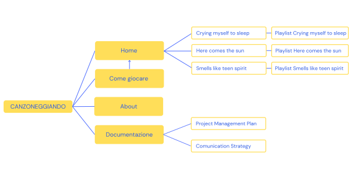
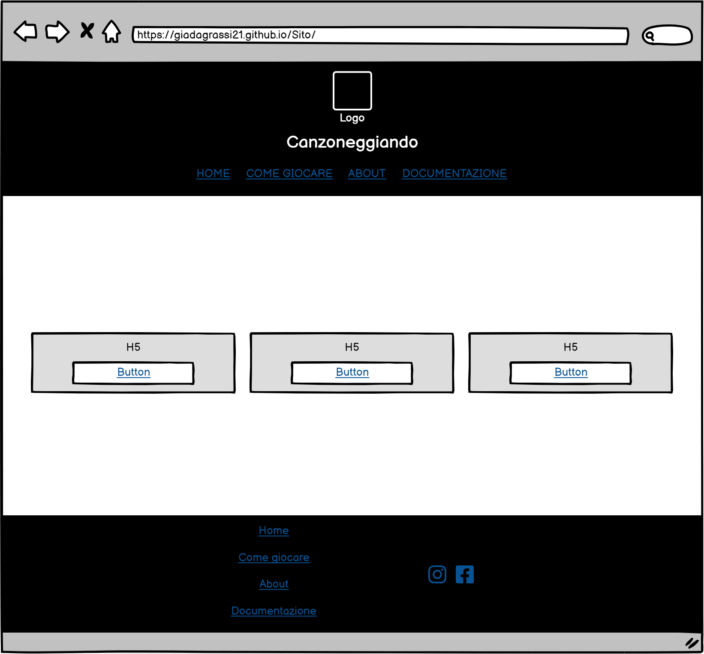
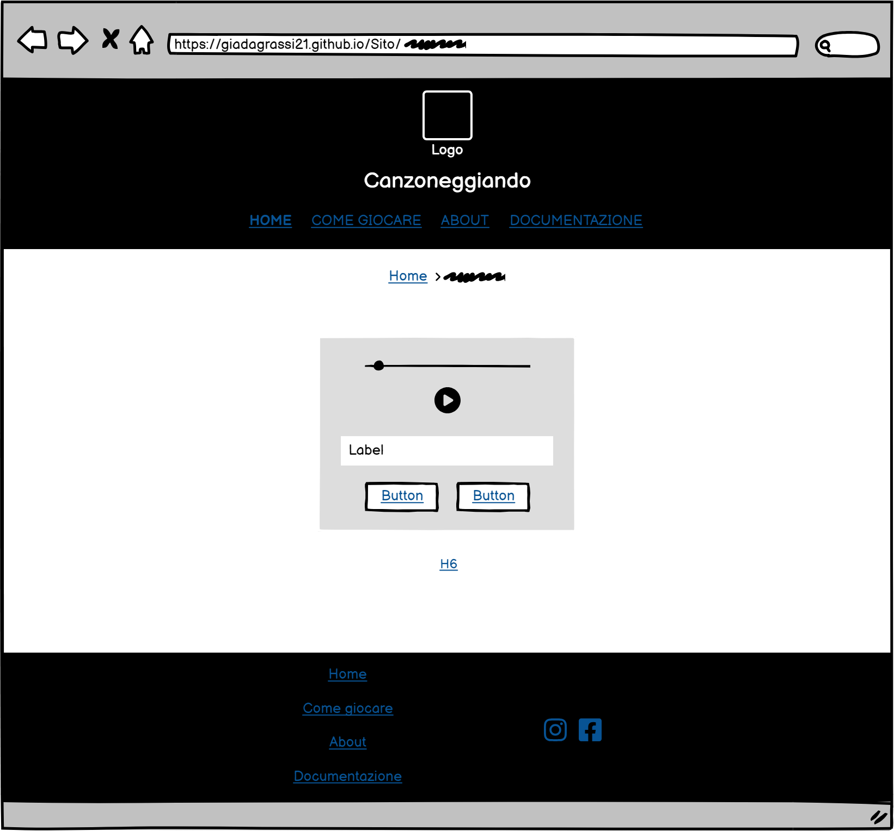

ABSTRACT
Canzoneggiando è un sito che unisce persone di diverse età e gusti musicali attraverso divertenti quiz musicali, offrendo un'esperienza coinvolgente che combina intrattenimento e scoperta musicale. Il suo obiettivo è mettere alla prova le conoscenze musicali degli utenti, invitandoli a indovinare le canzoni proposte e a scoprire nuove tracce e artisti, che poi potranno confrontare nelle playlist dedicate. Canzoneggiando si contraddistingue per l'approccio personalizzato che offre, basato sul mood desiderato dal giocatore. Gli utenti hanno la possibilità di scegliere quale tipo di canzoni dovranno indovinare in base alle specifiche emozioni che queste suscitano. Questo permette di coinvolgere un'ampia varietà di persone, che potrebbero non sentirsi rappresentati da un unico genere musicale, ma essere più inclini ad ascoltare brani in grado di evocare sensazioni precise.
BENCHMARKETING
Obiettivi
L’obiettivo principale del sito è mettere alla prova le conoscenze musicali degli utenti. Canzoneggiando invita gli utenti a indovinare le canzoni proposte e dà la possibilità di scoprire nuove tracce e artisti che potrebbero catturare la loro attenzione. Infatti, sono disponibili le playlist delle canzoni del gioco per coloro che le hanno trovate interessanti mentre cercavano di indovinarle o per coloro che semplicemente sono alla ricerca di nuove canzoni che suscitano quelle precise emozioni.
Target utente
Canzoneggiando si propone di unire un ampio un numero di persone di diverse età che amano musica e quiz e che sono o alla ricerca di un passatempo divertente o alla ricerca di nuove canzoni che suscitano delle specifiche emozioni.
Competitors
I principali competitors sono Heardle e Song Trivia. Tuttavia, il meccanismo è anche simile a quello di Wordle.
Heardle è un gioco musicale che coinvolge gli amanti della musica. Consiste nell’ascoltare un breve frammento audio di una canzone popolare e indovinare sia il titolo che l'artista corretti.
Song Trivia è un gioco a quiz multiplayer in cui puoi giocare da solo o con altri per vedere chi conosce più canzoni.
Wordle è un gioco online in cui i giocatori cercano di indovinare una parola di cinque lettere entro un numero limitato di tentativi.
STRUTTURA E LAYOUT
Archittetura
Wireframe
Home
Generi
Look & Feel
Il contenuto delle pagine è minimale ed è volto a orientare l’utente verso messaggi brevi. Non sono presenti immagini (tranne nella documentazione), ma cards volte a rendere più interattivo il sito.
Font
Shrikhand, una font serif usata per il titolo h1.
DM sans, una font sans serif usata per i titoli h2-h6. Si è optato per una font senza grazie per evitare di sovraccaricare il design, considerando la font graziata del titolo principale e il fatto che i testi non sono molto lunghi e difficili da leggere, dato che, per garantire una maggiore leggibilità, sono state adottate strategie come l'uso del grassetto e del colore viola per evidenziare le parole chiave.
Palette dei colori
I colori predominanti sono sulla scala del viola e del giallo; due colori che, essendo complementari, creano un forte impatto visivo.
LINGUAGGI E STRUMENTI
Linguaggi
HTML
CSS
Javascript
Strumenti
Visual Studio Code come rich text editor
Bootstrap 5 per la sua liberia
Canva per la creazione del logo, dell'archittetura del sito e dei post dei social
Spotify per gli embed delle playlist
Google Font per i font usati
Fontawesome per l'uso delle icone
Google Analytics per l'analisi delle visualizzazioni del sito
Balsamiq per la creazione dei wireframes
Coolors per il widget della palette di colori
GitHub per la pubblicazione del sito
Whatsapp, Instragram e Facebook per la promozione del sito